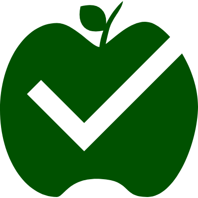

| Classify |
Classify is an automatic grading software that can be used with Google Docs!
|  |
The software is still in development, and is in alpha testing. If you want you can join alpha testing. Currently only for MCPS teachers. |
|
|
AcademiaSoft is a version of Classify made in Scratch 2. If you want you can test it out. However, It hasn't been updated since last year. |
You can contact me at samuelwiggins15@gmail.com or 442377@mcpsmd.net.